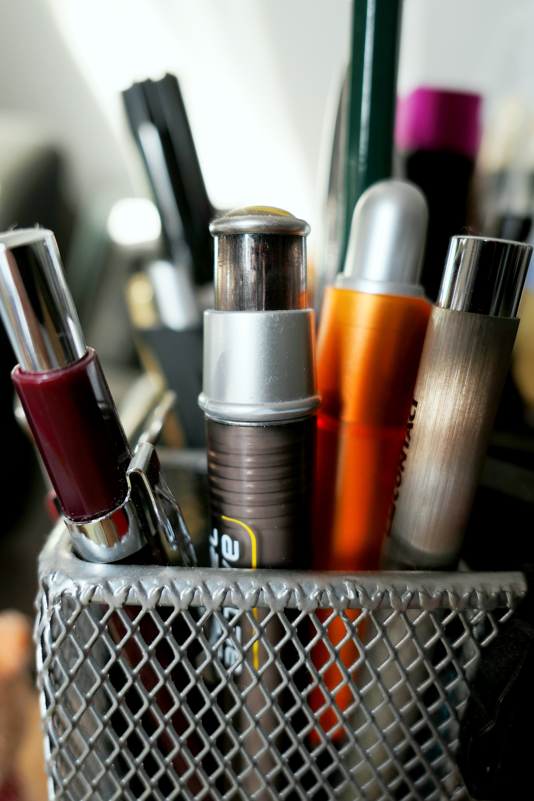

Společnost pro vaše personální potřeby.
Pokud hledáte spolehlivého partnera pro řešení vašich personálních potřeb, nemusíte hledat dál. OEPD s.r.o. je váš profesionální partner v oblasti personálního poradenství již od roku 2009, s kompletní certifikací agentury práce od ledna 2024. Naše společnost je zde proto, aby vám pomohla efektivně řídit personální procesy a najít ty nejvhodnější pracovníky pro vaše podnikání.

Naše cesta
Stát se Vaším skutečným partnerem, ne pouhým dodavatelem. Řešit složité i jednoduché výzvy přesně tak, jak budete potřebovat. Být Vaší oporou, konzultantem, řešitelem a především profesionálním servisem s osobním přístupem. Fungovat tak, jak je nám vlastní ... ... s bystrou myslí a otevřeným srdcem.
Portfolio služeb
Agenturní zaměstnávání
Zjednodušíme personální a mzdovou agendu. Zpracujeme za Vás veškerou personální a mzdovou agendu související se zaměstnaneckým poměrem. Uspoříme headcount. Dosáhneme flexibilní spolupráce se zaměstnancem. Poskytneme rozsáhlou orientaci na trhu práce.
Revize personálních procesů
Zpracujeme hlavní okruhy HR činností ve Vaší společnosti a navrhneme strategii jejich optimalizace. Zpracujeme analýzu: pracovního prostředí a podmínek vztahů mezí zaměstnanci ohodnocení systému odměňování a motivace rozvoje, vzdělávání a motivace
Personální agenda
Připravíme pracovně právní dokumentaci při nástupu, změně i výstupu zaměstnance. Poskytneme Vám personálně poradenské služby. Vybrat si můžete krátkodobý (nárazový) nebo dlouhodobý servis. Nabídneme Vám naše know-how v HR oblasti a vhled externího poradce.
Talent management
Na základě Vámi stanovených cílů připravíme, naplánujeme a zrealizujeme rozvojový program pro klíčové zaměstnance Vaší společnosti.
Zpětná vazba
Moderovaná zpětná vazba vybrání účastníků za pomoci žadatele o zpětnou vazbu příprava materiálů příprava účastníků moderace zpětné vazby na místě koučovací rozhovor se zaměstnancem, který zpětnou vazbu přijímá, identifikace jeho rozvojových potřeb, doporučení vhodných nástrojů rozvoje
Recruitment
Zajistíme propagaci pozice na relevantních kontaktních místech. Strukturovanými virtuálními nebo osobními rozhovory ověříme předpoklady kandidáta na danou pozici. Odprezentujeme Vám nejlepší kandidáty, které máme k dispozici. Realizujeme interview/AC/DC a doporučíme nejvhodnějšího kandidáta.
Partneři pro Vaše podnikání
Jsme vaším spolehlivým partnerem v oblasti personálniho poradenství a řízení lidských zdrojů. Naše zkušenosti a odborné znalosti nám umožňují poskytovat služby na nejvyšší úrovni. S námi získáte profesionální podporu, která přispěje k úspěchu vašeho podnikání. Inspirujte se našimi příběhy a nechte nás být součástí vašeho růstu.